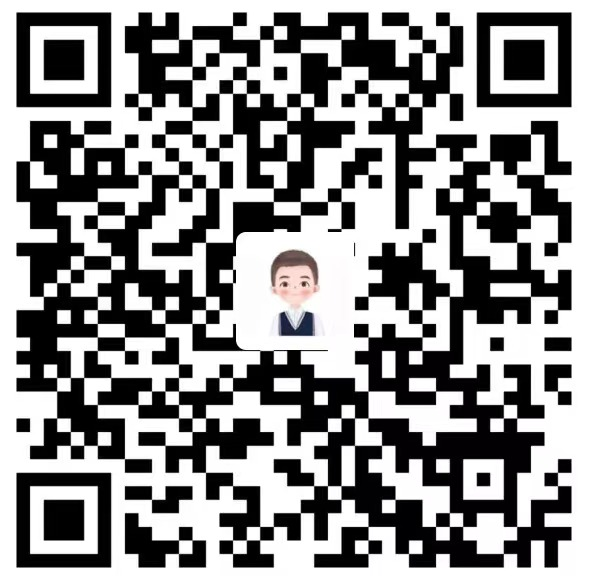

Artificial Intelligence and Machine Learning Area
-
International Conference on Artificial Intelligence and Statistics (AISTATS 2022) ☞ Link
Abstract: October 9, 2021
Full Paper: October 23, 2020
Notifications: January 19, 2022.
Recent Acceptance Rate: 29.2%, 29.8% (2022-2021) -
International Joint Conference on Artificial Intelligence (IJCAI 2022) ☞ Link
Abstract: January 8, 2022
Full Paper: January 15, 2021
Notifications: April 21, 2022.
Recent Acceptance Rate: 13.9%, 12.6%, 17.9% (2022-2020) -
Conference on Uncertainty in Artificial Intelligence (UAI 2022) ☞ Link
Full Paper: February 26, 2022
Notifications: May 17, 2021.
Recent Acceptance Rate: 32.3%, 26.3%, 27.5% (2022-2020) -
AAAI Conference on Artificial Intelligence (AAAI 2023) ☞ Link
Abstract: August 9, 2022
Full Paper: August 16, 2022
Notifications: November 2, 2022.
Recent Acceptance Rate: 15.0%, 21.4%, 20.6% (2022-2020) -
International Conference on Learning Representations (ICLR 2023) ☞ Link
Abstract: September 22, 2022
Full Paper: September 29, 2022
Notifications: January 21, 2023.
Recent Acceptance Rate: 32.9%, 28.7%, 26.5% (2022-2020) -
International Conference on Machine Learning (ICML 2022) ☞ Link
Abstract: January 21, 2022
Full Paper: January 28, 2022
Notifications: May 15, 2021.
Recent Acceptance Rate: 21.9%, 21.5%, 21.8% (2022-2020) -
Conference on Neural Information Processing Systems (NeurIPS 2022) ☞ Link
Abstract: May 17, 2022
Full Paper: May 20, 2022
Notifications: September 15, 2022.
Recent Acceptance Rate: 25.7%, 20.1%, 21.1% (2021-2019)
Data Mining and Information Retrieval Area
-
SIGIR Conference on Research and Development in Information Retrieval (SIGIR 2023) ☞ Link
Abstract: January 25, 2023
Full Paper: February 1, 2023
Notifications: April 5, 2023.
Recent Acceptance Rate: 20.3%, 21.0%, 26.0% (2022-2020) -
SIGKDD Conference on Knowledge Discovery and Data Mining (KDD 2022) ☞ Link
Full Paper: February 11, 2022
Notifications: May 19, 2022.
Recent Acceptance Rate: 14.9%, 15.4%, 16.8% (2022-2020) -
International Conference on Information and Knowledge Management (CIKM 2022) ☞ Link
Abstract: May 13, 2022
Full Paper: May 20, 2022
Notifications: August 2, 2022.
Recent Acceptance Rate: 21.7%, 21.0%, 19.4% (2021-2019) -
International Conference on Data Mining (ICDM 2022) ☞ Link
Full Paper: June 11, 2022
Notifications: September 3, 2022.
Recent Acceptance Rate: 9.9%, 9.8%, 9.1% (2021-2019) -
International Conference on Web Search and Data Mining (WSDM 2023) ☞ Link
Full Paper: August 13, 2022
Notifications: October 22, 2022.
Recent Acceptance Rate: 15.8%, 18.6%, 14.8% (2022-2020) -
The Web Conference (WWW 2023) ☞ Link
Abstract: October 7, 2022
Full Paper: October 14, 2022
Notifications: January 26, 2023.
Recent Acceptance Rate: 17.7%, 20.6%, 19.2% (2022-2020)
Computer Vision Area
-
Conference on Computer Vision and Pattern Recognition (CVPR 2022) ☞ Link
Full Paper: November 12, 2022
Notifications: February 9, 2023.
Recent Acceptance Rate: 25.3%, 23.7%, 22.1% (2022-2020) -
International Conference on Computer Vision (ICCV 2023) ☞ Link
Full Paper: March 9, 2023
Notifications: July 14, 2023.
Recent Acceptance Rate: 25.9%, 25.0%, 29.0% (2021, 2019, 2017) -
International Conference on Multimedia (MM 2022) ☞ Link
Abstract: April 1, 2022
Full Paper: April 12, 2022
Notifications: June 30, 2022.
Recent Acceptance Rate: 27.9%, 27.9%, 26.5% (2021-2019) -
European Conference on Computer Vision (ECCV 2020) ☞ Link
Full Paper: March 6, 2020
Notifications: July 4, 2020.
Recent Acceptance Rate: 27.1%, 31.8%, 26.6% (2020, 2018, 2016)
Natural Language Processing Area
-
Annual Meeting of the Association for Computational Linguistics (ACL 2023) ☞ Link
Abstract: January 14, 2023
Full Paper: January 21, 2023
Notifications: May 1, 2023.
Recent Acceptance Rate: 20.6%, 24.5%, 25.4% (2022-2020) -
Annual Conference of the North American Chapter of the Association for Computational Linguistics (NAACL 2022) ☞ Link
Full Paper: January 16, 2022
Notifications: April 12, 2022.
Recent Acceptance Rate: 29.2%, 26.0%, 26.3% (2021-2019) -
International Conference on Computational Linguistics (COLING 2022) ☞ Link
Full Paper: May 18, 2022
Notifications: August 16, 2022.
Recent Acceptance Rate: 33.4%, 37.4%, 32.4% (2020, 2018, 2016) -
Conference on Empirical Methods in Natural Language Processing (EMNLP 2022) ☞ Link
Abstract: June 18, 2022
Full Paper: June 25, 2022
Notifications: October 17, 2022.
Recent Acceptance Rate: 25.6%, 24.5%, 22.4% (2021-2019)
Acknowledgement
 |
Anyone who has any suggestion or wants to support this website together is more than welcome. Please feel free to contact Jiarui (Email: jinjiarui97@sjtu.edu.cn). |